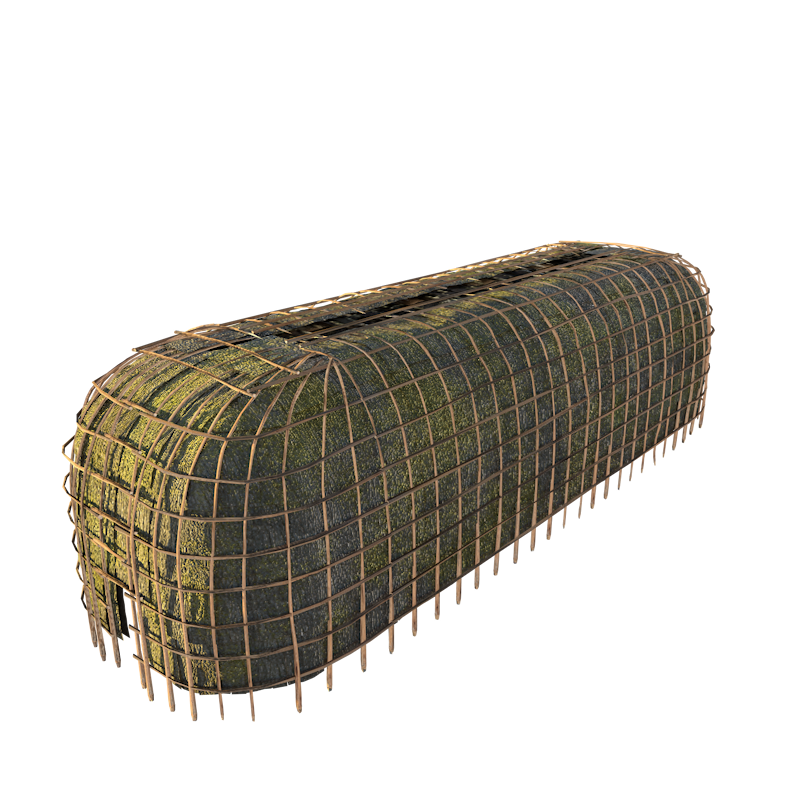

Main Container
Long houses
The Lawson Site
longhouse_cm
History of the Lawson Site
` The Lawson site is a 500-year-old village situated on a flat plateau overlooking Medway River and Snake Creek in northwest London. Ancestral communities selected this location for its defensible characteristics, access to water, and proximity to a wide variety of animals, fish and wild plants. The site is 5 acres in size and was occupied by an estimated 2000 people. Three-quarters of the Lawson site remains covered by trees and is undisturbed by previous farming or archaeological digs.
Longhouses were built with a frame of saplings supported by large posts in the house interior, typical longhouses were covered with sheets of bark such as elm bark and birch. Openings at either end were used as doors, while openings in the roof acted like chimneys, letting the smoke from the fires out. Fireplaces or hearths were spaced down the length of a central corridor in the house (an average of 1-6 fires), and were flanked with two platforms: the lower for sleeping, and the upper for food and storage.
The historic record shows that each hearth was shared by two families; one family lived on either side of the longhouse. On average, families had six to eight members. A medium sized longhouse like the one reconstructed at the Lawson site, would have
been occupied by 38-40 people, all related through the female line. When a couple got married, the husband would move into his wife’s family longhouse.
Archaeology on the Lawson Site
Although the site has been excavated for 150 years, the first detailed scientific excavations began in the early 1920s by William J. Wintemberg. Wilfrid and Amos Jury later excavated portions of the site in the 1930s and 1940s. The first modern excavation was conducted by William D. Finlayson with UWO’s archaeological field school in 1976. Annual excavations took place until the mid 2000’s and have contributed to our understanding of this complex site. Currently, we are focusing on the rehabilitation of the site